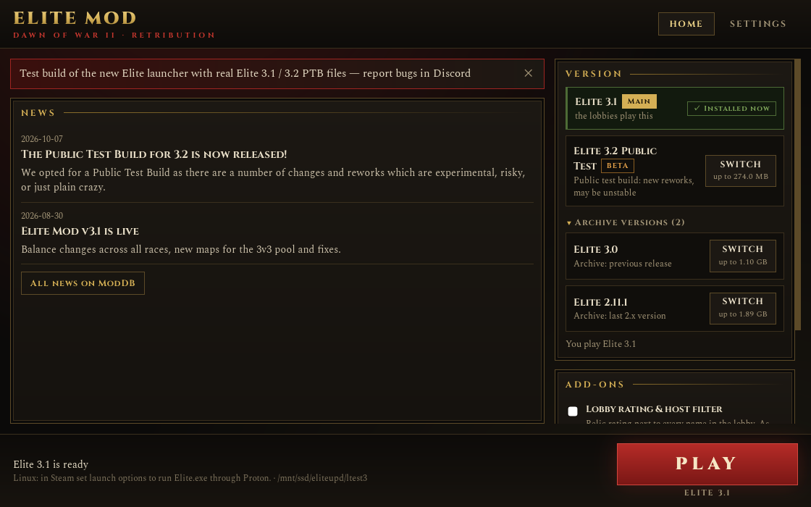
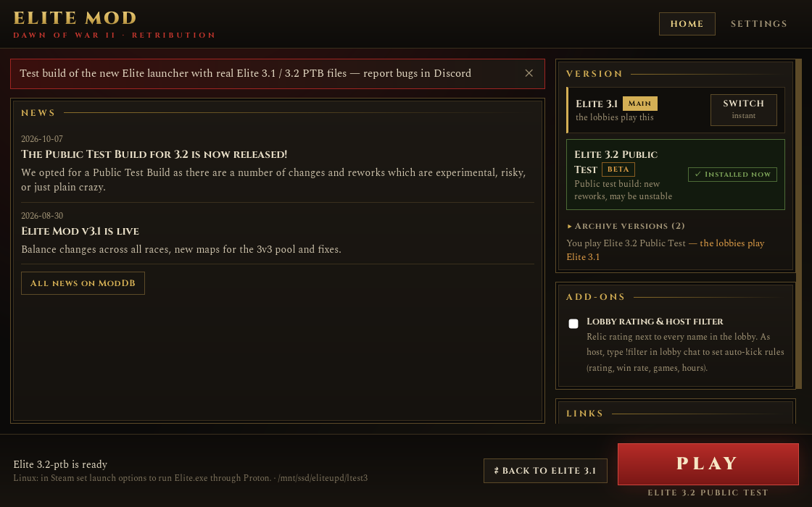

Elite 3.2 is out!
The public-test reworks are now the full release — it is the main version, and the lobbies play on it.
Read on ModDB →The competitive balance mod for Dawn of War II. One small launcher installs it, keeps it up to date and starts the game — no archives, no manual copying.
Install once, then just press Play. When a new version comes out, the launcher tells you — and only downloads what changed.
A small installer for Windows, macOS and Linux.
It finds Dawn of War II in every Steam library and installs the mod. If the game is missing, it opens the Steam page.
Big red button. Works offline too — the game always starts, update or not.
Screenshots of the working prototype. News, announcements and versions all come from the Elite team's server.


Everything is prepared on the server. The player's PC doesn't unpack or repack anything.
Files are split into small pieces. A balance patch is megabytes, not the whole multi-gigabyte installer.
A new version is offered with a banner — "the lobbies have already moved to it" — but nobody is forced to wait.
The main version is clearly marked. Switch to the public test or any archive version in one click — and back with one button. Versions you already had switch instantly.
Re-checks every file and fixes only the broken ones. Brings back the mod files Steam's "Verify integrity" removes.
Patch notes, tournaments and announcements right on the home screen, with links back to ModDB.
If one host is blocked or slow in a country, the launcher switches to another and resumes the download.
Every version is signed by the Elite team. A hacked mirror can't push modified files.
Optional extras with a checkbox, e.g. Relic rating of every player right in the lobby.
English, Russian, Spanish, French and German. MIT license; Rust + the system web view, about 5 MB on disk.
No need to keep the launcher open — it doesn't touch the running game. After installing, the mod works on its own, even if you remove the launcher.
One link under the stream is enough. A viewer who has never touched mods clicks it, gets the launcher, and is in an Elite lobby a few minutes later.
From the official ModDB page.
The public-test reworks are now the full release — it is the main version, and the lobbies play on it.
Read on ModDB →Balance changes across all races, new maps for the 3v3 pool and fixes.
Elite Mod on ModDB →Experiments we test with the community — download them all on one page.